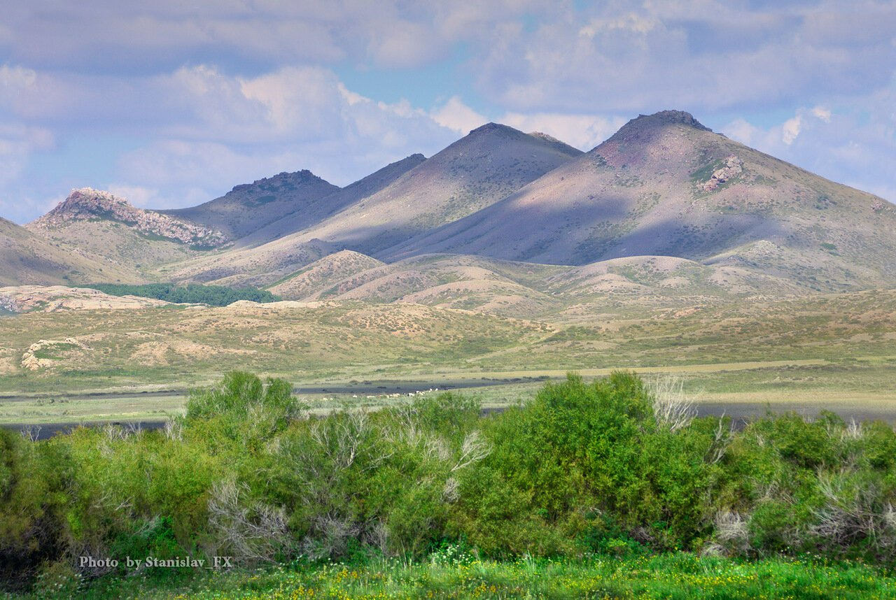
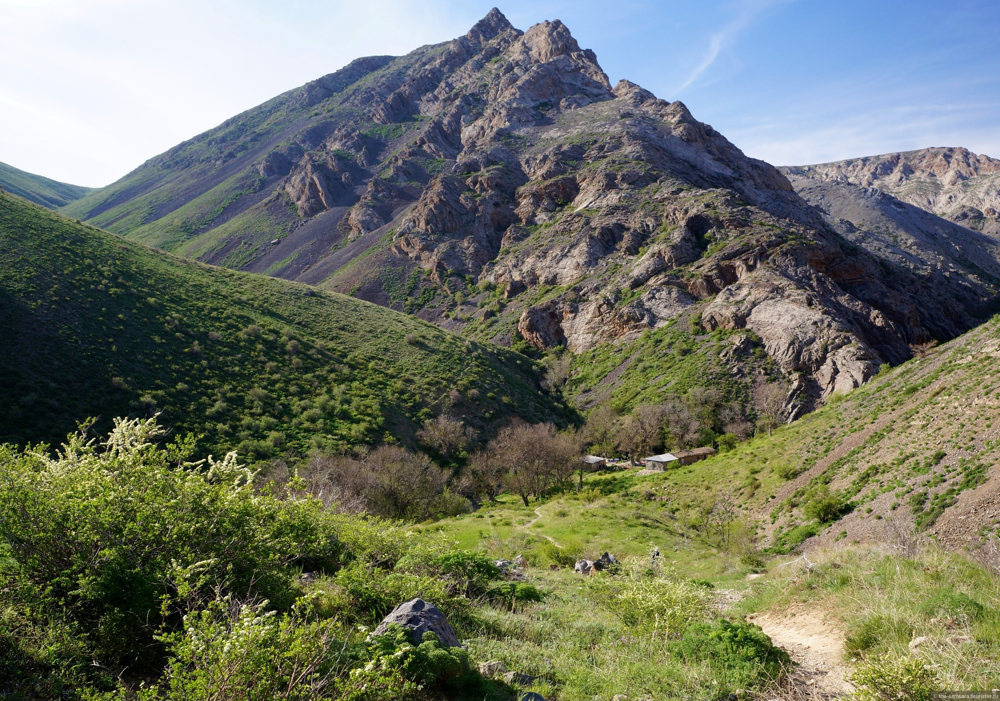

Аңыздар мекені-Ұлытау
Ұлытау – қазақ елінің құты, көз тұндырған көркі бар, ежелгі табиғат тылсымдарының бірі.
Оны Шамбала, Иерусалим, Қойлас және тағы басқалары сияқты әлемдік рухани күштер орталығы деп те айтады. Дүние жүзін топан су басқанда тек Гималай мен Тибет шыңдары, Гобидің биік қыраттары су бетінде қылтиып тұрған. Ұлытау тау жынысының гранит, базальттан тұратынының арқасында аман қалған.
Ұлытаудың ұшар биігіндегі үңгірлерде энергия ағыны, ерекше аура байқалады. Желдің соғуы да бөлек. Ол жоғарыдан төмен ұрып, ауа құйынша үйіріліп, биіктен жерге бағытталған. Таудан соққан қоңыр салқын, хош иісті, күмістей ауа Жаратқанның халқына ең қымбат сыйы тәрізді. Тау беткейіндегі мәңгі жасыл аршалар жылжып бара жатқандай көрінеді. Ақ қайындар мың бұралып, иіліп билеген ақбалтыр қыздарға ұқсайды. Таудың басында ауаны кеудеңді керіп жұта бересің, көзіңнің көруі де жақсарады, даусың саңқ-саңқ алысқа жетеді, ойың да жаңаша серпіліп, ап-анық болады.
Халық аузында Заратуштра (түрікше – Зәрдеш, грекше – Зороастр) бала кезінде Ұлытау үңгірлерінің бірінде ұйықтап жатқанда белгісіз күш оны орнынан көтеріп, шындардың ең биігіне жеткізген деген аңыз бар. Ол енді өзіне келе бергенде қараңғы түн қарс айырылып, төңірек аппақ болып, күндізгідей жайнап тұрды. Шуақты нұр Сарыарқаның ортасында шөккен нардай жатқан тұтас тауды бұрын-соңды болмаған сөзбен айтып жеткізгісіз алтын шұғылалы сәулемен шомылдырды. Осы сәтте шуақ нұрына малынған қасиетті бала құдіреті күшті Алланың нұр сипатын көреді. Жаратқан ием Зәрдешке адам баласын жақсылық, тек қана жақсылыққа бастауды жүктеп, аян береді.
Таудың ең биігінде Ақмешіт әулиенің бейіті бар. Құлаған ескі монастырдың немесе Этли монастырының орны жатыр. Бір ғажайыбы үй орнындай үңгір кісіге жайлы, жылдың төрт мезгілінде бірқалыпты температураны ұстап тұрады. Бұл жерге тәу етуге ағылған адамдар қысы-жазы тыным алмайды.
